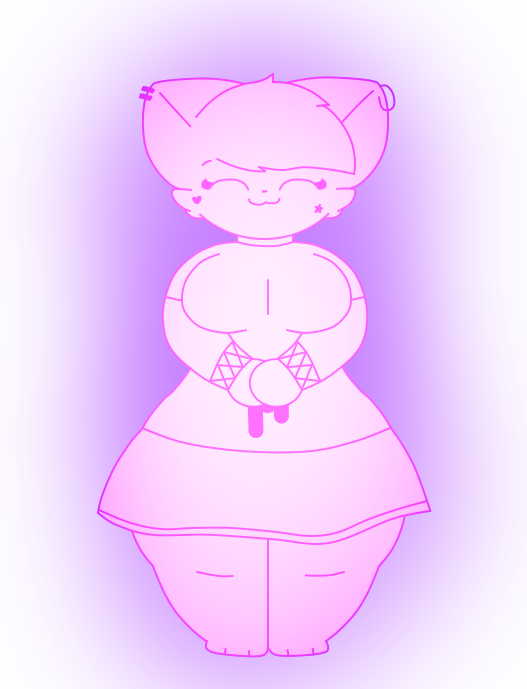

ava
basic info
Gender: Female
Height: 6'5
Weight: 215 lbs
Sexuality: Pansexual
biography
Ava is a glowing cat spirit who lives inside a specific necklace, she changes colors depending on her mood, purple is her default color, she also has no tail. She can often act motherly to her friends whenever she's in the mood (they're comfortable with it). She can also help you fight back at enemies if you're struggling to deal with one. Also she is Manitowoc's girlfriend, and just like him, she loves the 2000s and 2010s nostalgia as well as emo/scene type stuff.